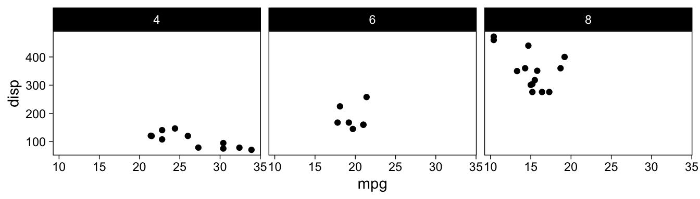
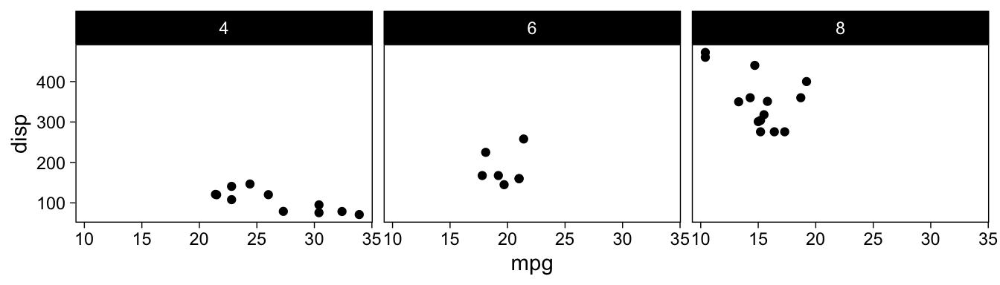
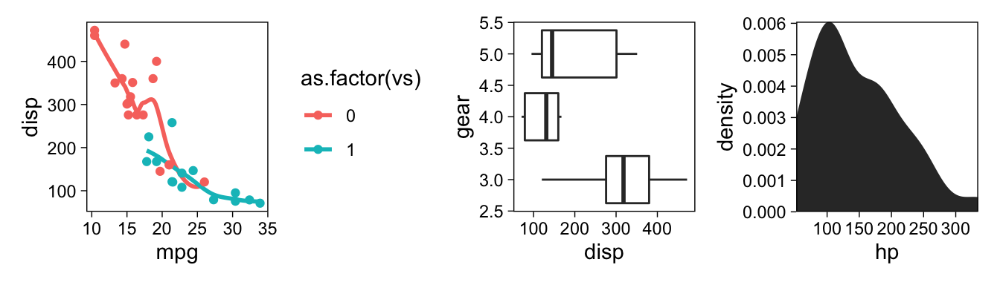
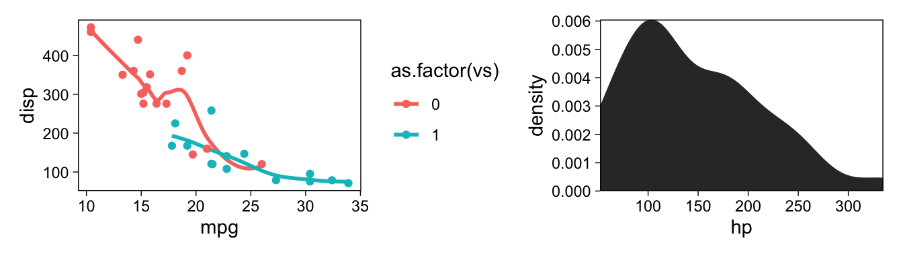
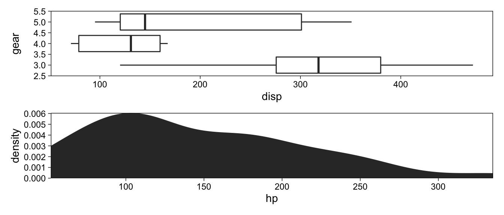

library(tidyverse)
ggplot(mtcars, aes(mpg, disp)) +
geom_point() +
facet_wrap("cyl")
How to combine arbitrary ggplots
ggplot2 is the best R package for data visualization, and has powerful features for “facetting” plots into small multiples based on categorical variables.
This “facetting” is useful for showing the same figure, e.g. a bivariate relationship, at multiple levels of some other variable
library(tidyverse)
ggplot(mtcars, aes(mpg, disp)) +
geom_point() +
facet_wrap("cyl")
But if you would like to get a figure that consists of multiple panels of unrelated plots—with different variables on the X and Y axes, potentially from different data sources—things become more complicated.
Say you have these three figures
p <- ggplot(mtcars)
a <- p +
aes(mpg, disp, col = as.factor(vs)) +
geom_smooth(se = F) +
geom_point()
b <- p +
aes(disp, gear, group = gear) +
ggstance::geom_boxploth()
c <- p +
aes(hp) +
stat_density(geom = "area") +
coord_cartesian(expand = 0)How would you go about combining them? There are a few options, such as grid.arrange() in the gridExtra package, and plot_grid() in the cowplot package. Today, I’ll point out a newer package that introduces a whole new syntax for combining together, patchwork.
patchwork is not yet on CRAN, so install it from GitHub:
# install.packages("devtools")
devtools::install_github("thomasp85/patchwork")Once you load the package, you can add ggplots together by adding them with +:
library(patchwork)
a + b + c
Basically, you can add ggplots together as if they were geoms inside a single ggplot. However, there’s more. | specifies side-by-side addition
a | c
And / is for adding plots under the previous plot
b / c
These operators can be used to flexibly compose figures from multiple components, using parentheses to group plots and +, |, and / to add the groups together
(a | b) / c
Use plot_annotation() to add tags, and & to pass theme elements to all plot elements in a composition
(a | b) / c +
plot_annotation(tag_levels = "A") &
theme(legend.position = "none")
There are many more examples on patchwork’s GitHub page. I’ve found this package more useful in composing figures out of multiple plots than its alternatives, mainly because of the concise but powerful syntax.
@online{vuorre2018,
author = {Matti Vuorre},
title = {Combine Ggplots with Patchwork},
date = {2018-12-13},
url = {https://sometimesir.com/posts/2018-12-13-rpihkal-combine-ggplots-with-patchwork},
langid = {en}
}